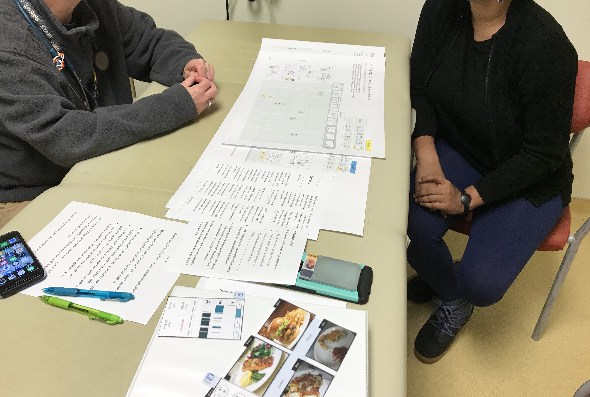
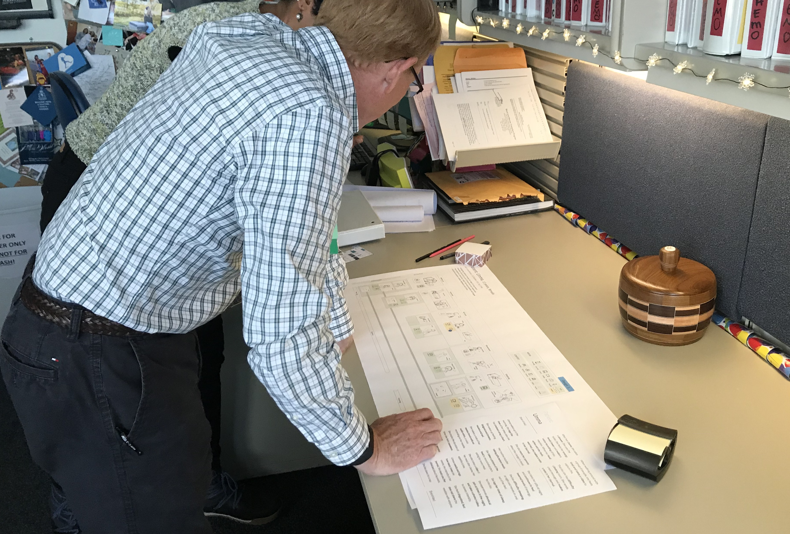

Integrating Patient-Generated Data into Clinical Workflows
Patient-Generated Health Data (PGHD) are health-related data that are created or inferred by patients or care partners to help address a health concern. But what does it mean to collect and reconcile collaboratively-collected data on a single person? What burden do clinicians often face when processing such patient data? I examine clinicians' perspectives on how technology can support the integration of patient-generated data into their practice.
- Project Date: Oct 2017 - Feb 2019
- Affiliations: Georgia Institute of Technology, Children's Healthcare of Atlanta, Emory University Hospital
- Funding: NSF #1652302
- My Role: Study design, relationship building with clinical partners, data collection, data analysis, design material development, and paper writeup
- Collaborators: Udaya, Lakshmi, Sampath Prahalad, Thomas Olson and Lauren Wilcox
Background
In complex pediatric care, decisions about treatment and supportive care are made based on a comprehensive understanding of patient's health data, comprising diagnostic physiological data, physician's global assessment, and self-reported observations of the patient's health status. However, young patients undergoing complex treatment regimens will often rely on family members to observe, capture, and communicate daily illness experiences to multiple clinicians representing different specialties. While family caregiver reports are inevitable in pediatric practice, clinicians must equally consider the patient’s own account during clinical encounters.
Goal
The goal of this research is to understand how to integrate collaboratively generated data by patients and family members into clinical workflows
Methods
- Semi-structured interviews with 22 clinicians in onco-hematology and rheumatology settings
- Formative user interface design study
Formative user interface design studies allowed us to understand clinicians' perspectives into the types of data representations that best support their clinical workflows.
{kind=link}

We created vignettes based on patient illness narratives derived from an earlier co-design study.
{kind=link}

We then investigated two presentation techniques (sequential vs. tabular view) to seed conversations about how they can foster data review and communication in the clinic.
Key Findings
{kind=link}
Clinicians advocated a role for display technologies to support flexible transitions between clinician prompts and patient-initiated, first-person illness narratives (via sequential view) during face-to-face encounters. They also valued a summarized (tabular) view of the patient's illness experience between visits that highlights concerning symptoms by presenting symptom attributes in the order of highest frequency, severity and interference with specific daily activities.
There are several barriers to incorporating patient- and caregiver-generated data into the clinical context. While clinicians consolidate data from distributed sources (e.g, history taking, physical exam, lab tests, etc.) to construct a holistic picture of the patient's health status, they faced challenges discerning clinical significance from patient-reported assessments and reconciling conflicting perspectives among patients and family caregivers. From these studies, I concluded that patients inevitably need to collaborate with family caregivers to document their illness narratives in the context of everyday living.
{kind=link}
Publications
| Common Information Spaces in Routine Care of Chronic Illnesses: Informing Collaboration with Patient-Generated Health Data (under review). Matthew K. Hong and Lauren Wilcox. |
|
| Integrating Patient-Generated Observations of Daily Living into Pediatric Cancer Care: A Formative User Interface Design Study. Udaya Lakshmi, Matthew K. Hong, and Lauren Wilcox. Proceedings of the Sixth IEEE International Conference on Healthcare Informatics (ICHI 2018), New York City, NY, USA, 2018. |
|
| Visual ODLs: Co-Designing Patient-Generated Observations of Daily Living to Support Data-Driven Conversations in Pediatric Care. Matthew K. Hong, Udaya Lakshmi, Thomas Olson, and Lauren Wilcox. Proceedings of the 36th Annual ACM Conference on Human Factors in Computing Systems (CHI 2018), Montréal, Québec, Canada, 2018 (25% acceptance rate). |